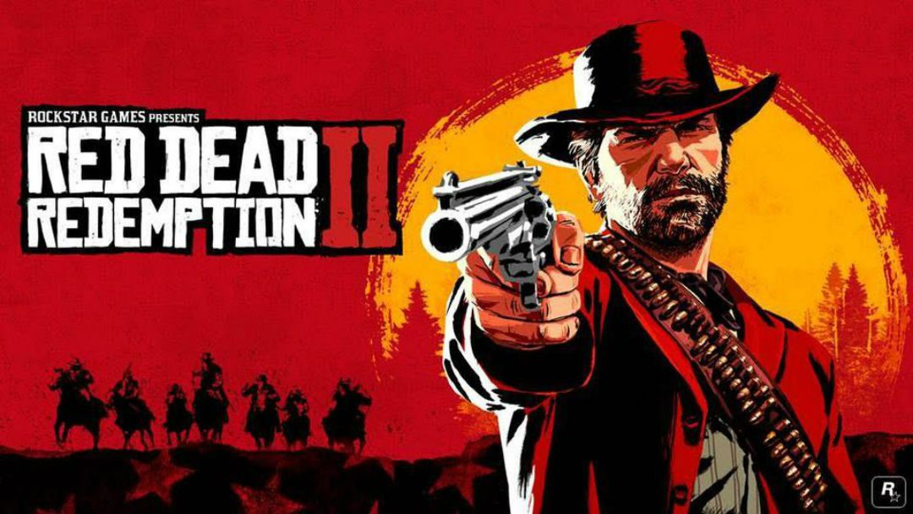
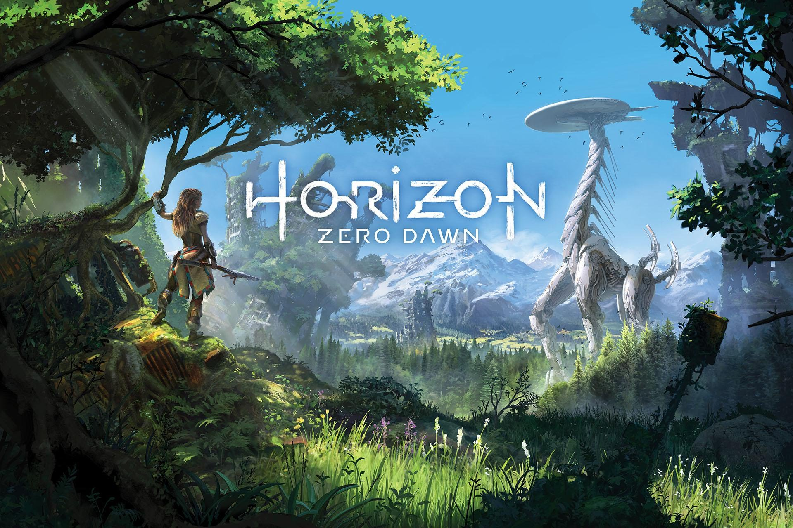
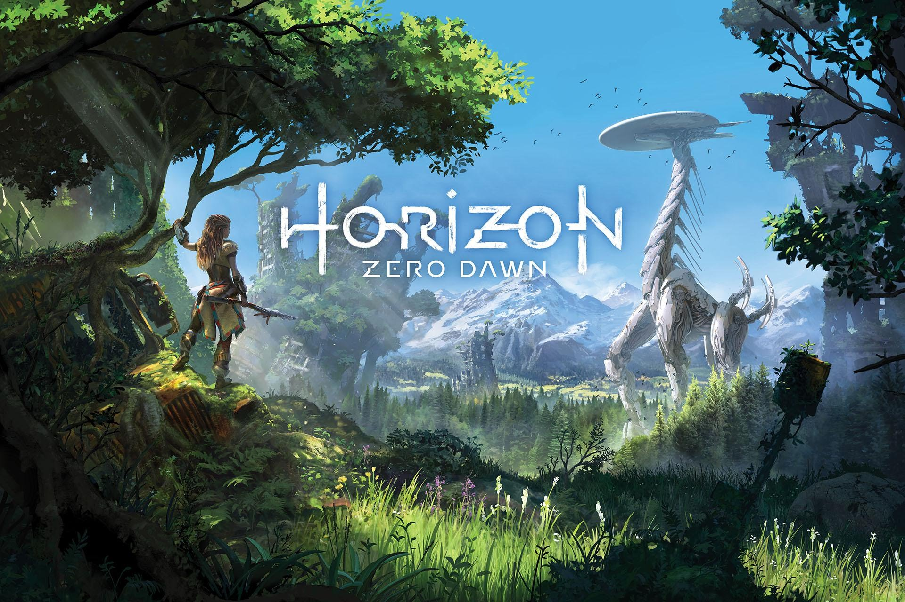

Bienvenido {{ username }}

Red Dead Redemption 2
Red Dead Redemption 2 es un juego de acción y aventura en mundo abierto que narra la historia del forajido
Arthur Morgan en el ocaso del Viejo Oeste.
 Elden Ring
Elden Ring es un juego de rol y acción en mundo abierto, desarrollado por FromSoftware, que combina
exploración libre con combates desafiantes en un mundo de fantasía oscura.

Horizon Zero Dawn
Horizon Zero Dawn es un juego de acción y aventura en mundo abierto, donde la cazadora Aloy explora un mundo
postapocalíptico dominado por máquinas.
Elden Ring
Elden Ring es un juego de rol y acción en mundo abierto, desarrollado por FromSoftware, que combina
exploración libre con combates desafiantes en un mundo de fantasía oscura.

Horizon Zero Dawn
Horizon Zero Dawn es un juego de acción y aventura en mundo abierto, donde la cazadora Aloy explora un mundo
postapocalíptico dominado por máquinas.